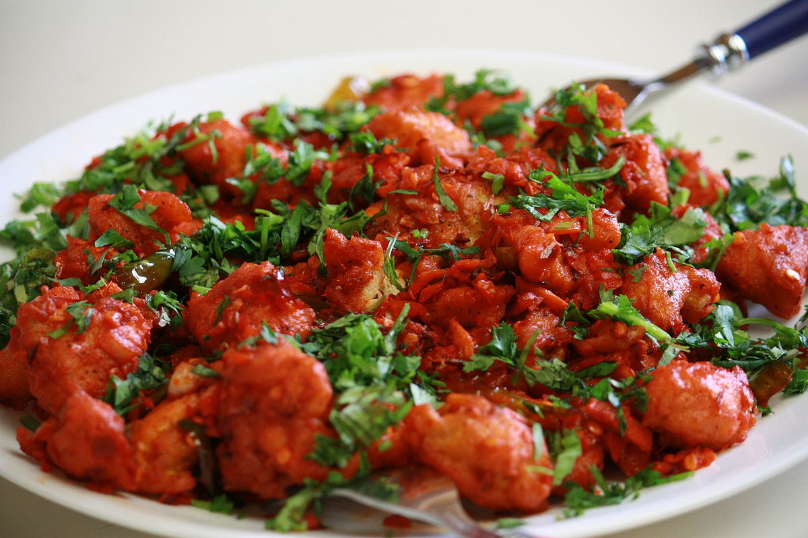

Simple Chicken 65 Recipe
Chicken 65 – Delicious deep fried chicken marinated in yoghurt along with assorted herbs and spices and tempered with red chilies, mustard seeds and fresh curry leaves.
Preparation time
- Total: Approximately 4 hours
- Preparation: 10 minutes
- Marinate: 3-4 hours
- Cooking: 20 minutes
However, while marinating time any other task can be done
Ingredients
- Boneless Chicken - 250grams
- Yougurt - 0.5 cup
- Lemon juice - 1.5 tbsp
- Rice flour - 2 tbsp
- Oil - 6 tbsp
- Dried Red chilli pepper - 5
- Ginger - 2 inch piece
- Garlic - 6 cloves
Instructions
- Grind Chilies, Ginger, Garlic, Coriander seeds, pepper corns etc to a fine paste. Mix the yogurt, lemon juice, grated beetroot or colour (if using), rice flour, salt and two tablespoons oil into the ground masala paste. Mix in about 10 Curry leaves as well. Coat the chicken with the paste just made and marinate for an hour.
- Heat the remaining oil in a thick-bottomed pan. Start by adding the chicken pieces in small batches of six to eight pieces and stir-fry over high heat for a minute or two. Toss continuously
- Add another batch of the chicken and repeat, be sure to continue tossing the chicken and not let it burn or stick to the pan.
- Lower heat once all the chicken has been added.
- Turn the pieces frequently, coating with the remaining masala. Cook till the chicken turns crispy on the outside, but moist and soft on the inside. Do not over cook.
- Adjust salt, add the remaining curry leaves toss well and remove. Garnish with fresh coriander and serve hot.
Nutrition
The table below shows nutritional values per serving without the additional fillings.(For 100 Grams)